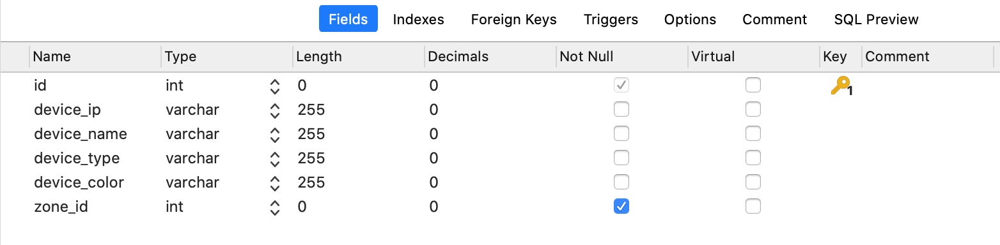
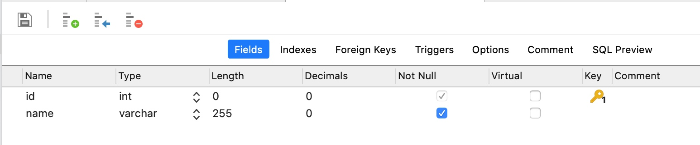
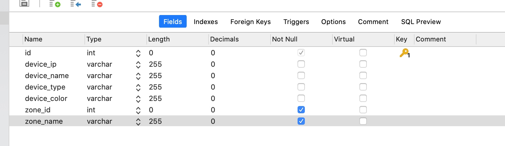
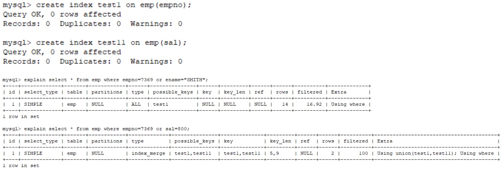
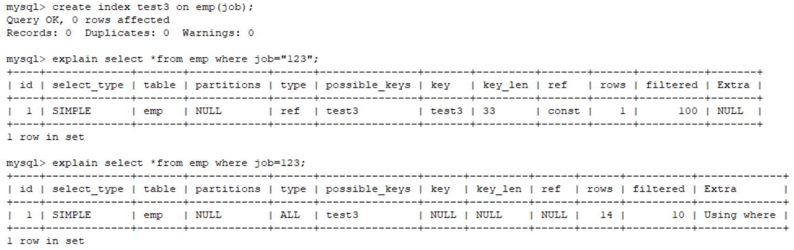
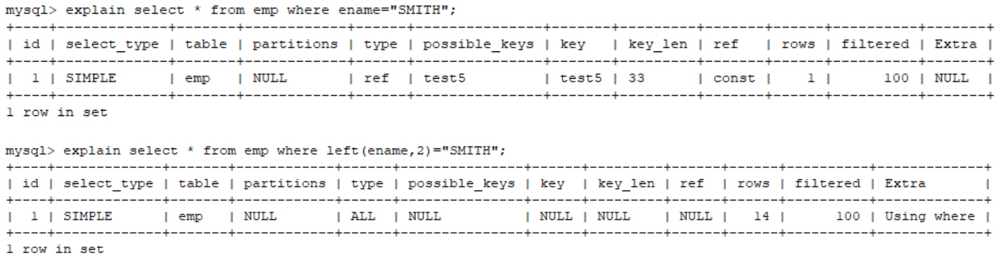

从@Transactional，@Async 失效说起
1、问题描述
当我们在同一个类中，调用一个被@Transactional,或@Async标注的方法时，这些注解是否会生效?
结论是不会。
2、原因
Spring采用动态代理(AOP)实现对bean的管理和切片，它为我们的每个class生成一个代理对象。只有在代理对象之间进行调用时，可以触发切面逻辑。
spring 在扫描bean的时候会扫描方法上是否包含@Async注解，如果包含，spring会为这个bean动态地生成一个子类（即代理类，proxy），代理类是继承原来那个bean的。此时，当这个有注解的方法被调用的时候，实际上是由代理类来调用的，代理类在调用时增加异步作用。然而，如果这个有注解的方法是被同一个类中的其他方法调用的，那么该方法的调用并没有通过代理类，而是直接通过原来的那个bean，所以就没有增加异步作用，我们看到的现象就是@Async注解无效。
当我们调用A的bean的a()方法的时候，也是被proxyA拦截，执行proxyA拦截，执行proxyA.a()（标记3），然而，由以上代码可知，这时候它调用的是objectA.a()，也就是由原来的bean来调用a()方法了，所以代码跑到了“标记1”。由此可见，“标记2”并没有被执行到，所以异步执行的效果也没有运行。
特别注意: 当Spring的事务在同一个类时，它的自我调用时事务将失效.
@Async
解决方案
方案一
在当前类中通过上下文获取自己的代理对象调用异步方法
直接@Autowired
方案二
基于 AopContext 暴露代理对象
EnableAspectJAutoProxy（exposeProxy=true）
AopContext.currentProxy()
https://mp.weixin.qq.com/s/m7p7AP_zT1JEZrxwmVISVQ
方案三
从外部类调用
从优化数据库查询速度谈起---MySQL优化相关知识梳理
0. 如何优化数据库查询速度？
优化数据库查询是一个老生常谈的问题。为了回答好这个问题，我们需要从以下几个方面来分析系统中的数据库查询问题。
- 数据库的设计是否合理。基于系统读大于写的场景，可以使用反范式化设计，减少join表操作。
- 数据库语句优化。使用的数据库语句是否合理。
- 索引优化。
1. 数据库的设计是否合理？
例如我们有一个设备信息表（t_device）：

一个设备区域信息表（t_zone）：

一个使用场景是，系统需要频繁的查询设备的基础信息，并且希望同时查出设备所属区域的名字。
为此，我们需要使用一个join操作来获得设备的区域名。
普遍的情况下，数据库设计应遵循三范式（3NF）设计。但是我们的系统如果存在查询请求多于插入和更新请求的情况。则可以考虑采用反范式化设计。
反范式化设计指的是违背第三范式设计。以上的设计符合第三范式设计的要求，即在device表中仅保存了zone_id，没有保存区域的名字，这使得我们需要通过join操作来获得区域信息。如果我们在t_device表中增加一个区域字段。

显然，我们不需要额外join，仅需要查询设备的基本信息表（t_device）就可以获取到设备的区域名。
1.1. 额外的问题
反范式化设计让我们减少了数据库的查询次数。达到提升的查询速度的目的。但是需要注意的是，经过改造后，设备的区域信息存放在了t_device, t_zone 两张表中。也就是如果需要更新设备的区域信息，我们需要同时修改这两张表中的数据。这也是反范式化设计核心理念，以空间换时间的体现。
2. SQL语句优化
网上可以搜到很多SQL语句的实战文章，其中大部分和索引有关系。一个高频的关键字就是避免全表扫描。本章主要介绍和索引无关（即不管是否建立索引都会有问题）的避免全表扫描的常见Tip。
1. 字段值中包含null
避免字段值中有null，可以使用一个默认值来代替null的含义。
2. 避免使用函数
如果需要使用函数应该在代码中提前计算好，避免使用SQL的函数。特别是在where中使用。
3. 避免隐式转义
例如查询一个varchar的字段，查询子句写成了 where id=1。
4. in 和 not in 也要慎用
会导致全表扫描。
3. 索引优化
索引是加速SQL查询的最主要手段。索引的相关概念有：
- 主键索引
- 唯一索引
- 普通索引
- 联合索引
- 聚簇索引
- 二级索引，辅助索引
接下来让我们一个一个了解。
3.1. 主键索引
主键顾名思义是主键所在的索引。在MySQL中，如果采用InnoDB引擎，则必须有一个主键索引。如果用户没有定义系统会自动选择第一个不包含NULL的唯一索引作为主键索引，如果还是没有，系统会帮忙生成一个。InnoDB会选择内置6字节长的ROWID作为隐含的聚集索引(ROWID随着行记录的写入而主键递增)。
3.2.为什么InnoDB一定要有主键索引？
这是由InnoDB的底层数据结构B+树决定的。具体的资料网上有很多，这里就不复制黏贴了。
传送门：
为什么InnoDB表必须有主键，并且推荐使用整型的自增主键？
引申知识点（MySQL中的B+树）
3.2. 唯一索引&普通索引
唯一索引指的是建立索引的字段是唯一的。普通索引则没有这个限制。
3.3. 联合索引
联合索引指的是由多个字段建立的索引。例如
我们可以同时对device_ip, device_type 建立索引。建立联合索引后的效果等同于建立了两条索引，一条是device_ip索引，一条是device_ip, device_type索引。
3.4. 聚簇索引（聚集索引）
聚簇索引并不是一种单独的索引类型，而是一种数据存储方式。具体的细节依赖于其实现方式，但InnoDB的聚簇索引实际上在同一个结构中保存了B-Tree索引和数据行。当表有聚簇索引时，他的数据行实际上存放在索引的叶子页（leaf page）中。术语 “聚簇”表示数据行和相邻的键值紧凑地存储在一起（这并非总成立）。
3.5.
3.6. 索引优化
1. 开启慢查询记录
了解了索引的相关知识，接下来就该开始定位系统中有问题的查询了。通过开启慢查询记录，我们可以获取到一段时间内的慢查询的执行记录。
mysql 开启慢查询及其用mysqldumpslow做日志分析
2. explain执行计划
索引失效的几种情况
- like 以%开头，索引无效；当like前缀没有%，后缀有%时，索引有效。
 PS:
PS:
当真的需要两边都使用%来模糊查询时，只有当这个作为模糊查询的条件字段（例子中的name）以及所想要查询出来的数据字段（例子中的 id & name & age）都在索引列上时，才能真正使用索引，否则，索引失效全表扫描（比如多了一个 salary 字段）。我想，这应该就是 ‘覆盖索引（索引覆盖）’ 的本质吧。同时，这也能很好的证实 “尽量避免SELECT * 而是一一罗列出所需要查询的字段” 的道理吧，因为，搞不好 SELECT * 就多了一个字段，就导致了全表扫描。 参考资料：https://www.bbsmax.com/A/mo5kk1rK5w/
参考资料：https://www.bbsmax.com/A/mo5kk1rK5w/ or语句前后没有同时使用索引。当or左右查询字段只有一个是索引，该索引失效，只有当or左右查询字段均为索引时，才会生效
组合索引，不是使用第一列索引，索引失效，即不满足最左匹配原则。

数据类型出现隐式转化。如varchar不加单引号的话可能会自动转换为int型，使索引无效，产生全表扫描。
在索引列上使用 IS NULL 或 IS NOT NULL操作。索引是不索引空值的，所以这样的操作不能使用索引，可以用其他的办法处理，例如：数字类型，判断大于0，字符串类型设置一个默认值，判断是否等于默认值即可。

在索引字段上使用not，<>，!=。不等于操作符是永远不会用到索引的，因此对它的处理只会产生全表扫描。 优化方法： key<>0 改为 key>0 or key<0。

对索引字段进行计算操作、字段上使用函数。（索引为 emp(ename,empno,sal)）
当全表扫描速度比索引速度快时，mysql会使用全表扫描，此时索引失效。
3. 优化目标
根据explian中ref的字段，情况从好到坏顺序是
system > const > eq_ref > ref > fulltext > ref_or_null > index_merge > unique_subquery > index_subquery > range > index > ALL
比较常见的是const eq_ref ref range index all
通常需要将语句优化到index以上。
4. 引申知识
4.1. 回表查询
通常发生在select * 的查询下。在这种情况下，即使我们定义了很好的索引，where子句已经找到了他需要的数据。由于我们要查询*，也就是所有的数据。而这些数据没有存在索引表中，所以我们需要返回到聚集索引根据主键在查找一次才可以获取所需的信息。
应该要注意到，不只是select * 会触发回表操作，只要select的字段没有建立索引就会触发回表操作。
与回表查询相对应的是覆盖索引。
4.2. 覆盖索引
索引覆盖是一种避免回表查询的优化策略。具体的做法就是将要查询的数据作为索引列建立普通索引（可以是单列索引，也可以一个索引语句定义所有要查询的列，即联合索引），这样的话就可以直接返回索引中的的数据，不需要再通过聚集索引去定位行记录，避免了回表的情况发生。
如果一个索引覆盖（包含）了所有需要查询的字段的值，这个索引就是覆盖索引。因为索引中已经包含了要查询的字段的值，因此查询的时候直接返回索引中的字段值就可以了，不需要再到表中查询，避免了对主键索引的二次查询，也就提高了查询的效率。
要注意的是，不是所有类型的索引都可以成为覆盖索引的。因为覆盖索引必须要存储索引的列值，而哈希索引、空间索引和全文索引等都不存储索引列值，索引MySQL只能使用B-Tree索引做覆盖索引。
4.3. 索引下推
索引下推是一种数据库内的自我优化手段。有了索引下推优化，可以在有like条件查询的情况下，减少回表次数。
例如有这样一个语句:
select * from user_table where username like '张%' and age > 10
语句有两种执行可能：
根据（username,age）联合索引查询所有满足名称以“张”开头的索引，然后回表查询出相应的全行数据，然后再筛选出满足年龄小于等于10的用户数据
根据（username,age）联合索引查询所有满足名称以“张”开头的索引，然后直接再筛选出年龄小于等于10的索引，之后再回表查询全行数据。
明显的，第二种方式需要回表查询的全行数据比较少，这就是mysql的索引下推。
4.4. B+ Tree的优势
//TODO:
Copyright © 2015 Powered by MWeb, Theme used GitHub CSS.